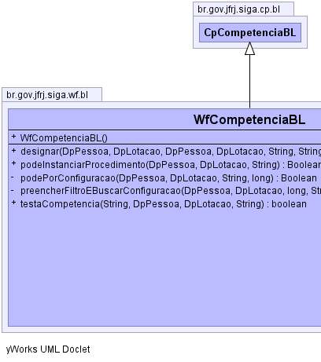
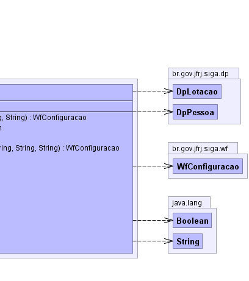

br.gov.jfrj.siga.cp.bl.CpCompetenciaBL
br.gov.jfrj.siga.wf.bl.WfCompetenciaBL
br.gov.jfrj.siga.cp.bl.CpCompetenciaBL
br.gov.jfrj.siga.wf.bl.WfCompetenciaBL
|
|||||||||
| PREV CLASS NEXT CLASS | FRAMES NO FRAMES | ||||||||
| SUMMARY: NESTED | FIELD | CONSTR | METHOD | DETAIL: FIELD | CONSTR | METHOD | ||||||||
java.lang.Object
public class WfCompetenciaBL
Classe que representa as competências da lógica de negócio do sistema de workflow.
|  |  |
| Constructor Summary | |
|---|---|
WfCompetenciaBL()
|
|
| Method Summary | |
|---|---|
WfConfiguracao |
designar(DpPessoa titularIniciador,
DpLotacao lotaTitularIniciador,
DpPessoa titularAnterior,
DpLotacao lotaTitularAnterior,
java.lang.String procedimento,
java.lang.String raia,
java.lang.String tarefa)
Retorna uma configuração de designação de tarefa. |
java.lang.Boolean |
podeInstanciarProcedimento(DpPessoa titular,
DpLotacao lotaTitular,
java.lang.String procedimento)
Verifica se a pessoa ou lotação pode instanciar um procedimento (Process). |
private java.lang.Boolean |
podePorConfiguracao(DpPessoa titular,
DpLotacao lotaTitular,
java.lang.String procedimento,
long tipoConfig)
Verifica se uma pessoa ou lotação tem permissão em uma configuração passada como parâmetro. |
private WfConfiguracao |
preencherFiltroEBuscarConfiguracao(DpPessoa titularIniciador,
DpLotacao lotaTitularIniciador,
long tipoConfig,
java.lang.String procedimento,
java.lang.String raia,
java.lang.String tarefa)
Retorna um configuração existente para a combinação dos dados passados como parâmetros, caso exista. |
boolean |
testaCompetencia(java.lang.String funcao,
DpPessoa titular,
DpLotacao lotaTitular,
java.lang.String pd)
Verifica se uma pessoa ou lotação tem competência para realizar uma determinada ação no sistema. |
| Methods inherited from class br.gov.jfrj.siga.cp.bl.CpCompetenciaBL |
|---|
getConfiguracaoBL, getSubsecretaria, isIdentidadeBloqueada, isPessoaBloqueada, podeSimularUsuario, setConfiguracaoBL, testaCompetencia |
| Methods inherited from class java.lang.Object |
|---|
clone, equals, finalize, getClass, hashCode, notify, notifyAll, toString, wait, wait, wait |
| Constructor Detail |
|---|
public WfCompetenciaBL()
| Method Detail |
|---|
public java.lang.Boolean podeInstanciarProcedimento(DpPessoa titular,
DpLotacao lotaTitular,
java.lang.String procedimento)
throws java.lang.Exception
titular - lotaTitular - procedimento -
java.lang.Exception
private WfConfiguracao preencherFiltroEBuscarConfiguracao(DpPessoa titularIniciador,
DpLotacao lotaTitularIniciador,
long tipoConfig,
java.lang.String procedimento,
java.lang.String raia,
java.lang.String tarefa)
throws java.lang.Exception
titularIniciador - lotaTitularIniciador - tipoConfig - procedimento - raia - tarefa -
java.lang.Exception
private java.lang.Boolean podePorConfiguracao(DpPessoa titular,
DpLotacao lotaTitular,
java.lang.String procedimento,
long tipoConfig)
throws java.lang.Exception
titular - lotaTitular - procedimento - tipoConfig - - Configuração que terá a permissão verificada.
java.lang.Exception
public WfConfiguracao designar(DpPessoa titularIniciador,
DpLotacao lotaTitularIniciador,
DpPessoa titularAnterior,
DpLotacao lotaTitularAnterior,
java.lang.String procedimento,
java.lang.String raia,
java.lang.String tarefa)
throws java.lang.Exception
titularIniciador - lotaTitularIniciador - titularAnterior - lotaTitularAnterior - procedimento - raia - tarefa -
java.lang.Exception
public boolean testaCompetencia(java.lang.String funcao,
DpPessoa titular,
DpLotacao lotaTitular,
java.lang.String pd)
funcao - Competência a ser testada (Ex: IntanciarProcedimento)titular - Pessoa a ser verificadalotaTitular - Lotação a ser verificadapd - Procedimento a ser testado
|
|||||||||
| PREV CLASS NEXT CLASS | FRAMES NO FRAMES | ||||||||
| SUMMARY: NESTED | FIELD | CONSTR | METHOD | DETAIL: FIELD | CONSTR | METHOD | ||||||||